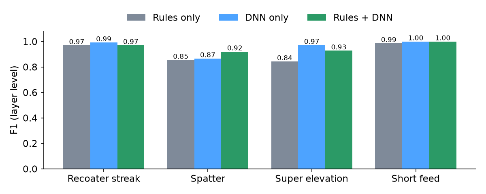
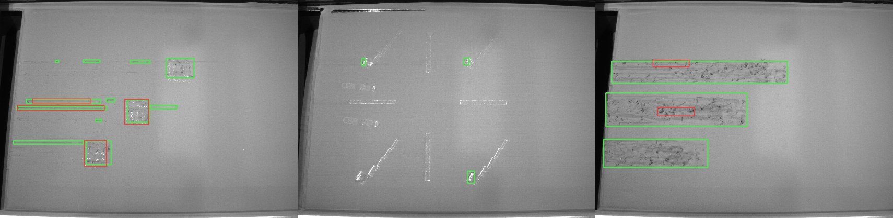
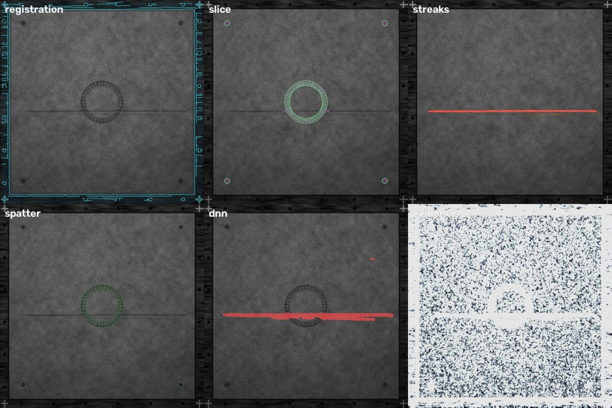
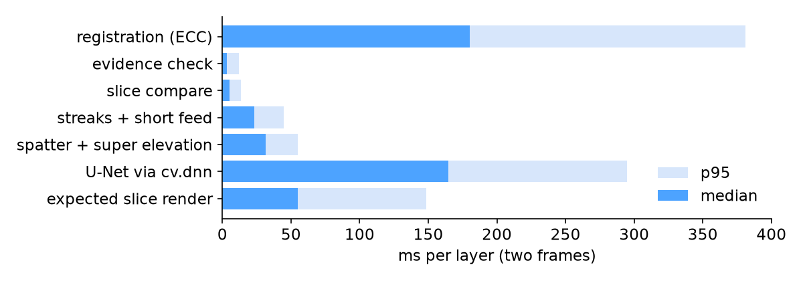
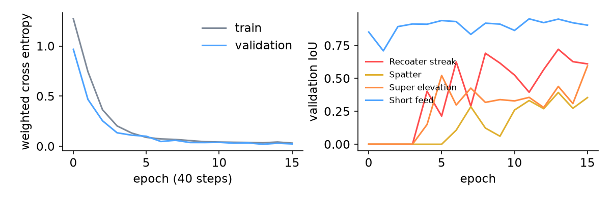

Layer by layer vision QA for laser powder bed fusion, built on OpenCV 5.0.0.
Generated by make report from docs/eval/*.json; every number below is read from those files.
docs/eval/synthetic_test.json and are not the headline.Scoring is per layer: a defect type counts as found on a layer if the detector reports at least one region of that type. Frames with strong glare or motion blur are scored only on whether the evidence gate rejects them.

| Defect | Rules only P | R | F1 | DNN only P | R | F1 | Rules + DNN P | R | F1 |
|---|---|---|---|---|---|---|---|---|---|
| Recoater streak | 0.96 | 0.98 | 0.97 | 0.98 | 1.00 | 0.99 | 0.94 | 1.00 | 0.97 |
| Spatter | 1.00 | 0.75 | 0.85 | 0.98 | 0.78 | 0.87 | 0.98 | 0.87 | 0.92 |
| Super elevation | 0.87 | 0.82 | 0.84 | 0.97 | 0.97 | 0.97 | 0.88 | 0.99 | 0.93 |
| Short feed | 1.00 | 0.97 | 0.99 | 1.00 | 1.00 | 1.00 | 1.00 | 1.00 | 1.00 |
| macro F1 | 0.91 | 0.96 | 0.95 |
Counts:
| Defect | Rules only TP / FP / FN | DNN only TP / FP / FN | Rules + DNN TP / FP / FN |
|---|---|---|---|
| Recoater streak | 65 / 3 / 1 | 66 / 1 / 0 | 66 / 4 / 0 |
| Spatter | 50 / 0 / 17 | 52 / 1 / 15 | 58 / 1 / 9 |
| Super elevation | 59 / 9 / 13 | 70 / 2 / 2 | 71 / 10 / 1 |
| Short feed | 68 / 0 / 2 | 70 / 0 / 0 | 70 / 0 / 0 |
DNN pixel IoU per class on usable hold-out frames: Recoater streak 0.77, Spatter 0.59, Super elevation 0.72, Short feed 0.94
| Measure | Value |
|---|---|
| Layers | 400 |
| Unusable frames (strong glare or blur) | 51 |
| Decisions made on an unusable frame (should be 0) | 1 |
| Evidence gate precision / recall | 1.00 / 0.98 |
| Mild nuisance frames (should pass) flagged | 0 of 42 |
| Layers that need a recoat or stop (by injected geometry) | 170 |
| Missed critical layers (agent said continue) | 13 |
| False stops on layers that did not need one | 5 (27.9 per 1,000 good layers) |
| Any intervention on layers that did not need one | 5 (27.9 per 1,000) |
| Actions | CONTINUE 187, RECOAT 86, RE_IMAGE 50, STOP 77 |
"Needs intervention" is defined from the injected geometry only: a streak at least 150 px long or crossing the part, a short feed patch of at least 500 px, or a super elevation crescent of at least 250 px. The hold-out layers of one build are 40 random heights, not consecutive layers, so trend rules (streaks on 3 of the last 10 layers, super elevation on 2 layers in a row) fire less often than they would on a real build.
All 13 missed critical layers: the defect was detected in 13 of them (Recoater streak 1, Super elevation 12). The miss is in the policy, not the vision: the label calls a super elevation critical from 250 px of area, the policy stops on a crescent arc of 60 px or on two layers in a row, so crescents under 60 px of arc but over 250 px of area fall between the two; the streak was measured just under the 150 px length rule. 5 of the 5 false stops come from the opposite side of the same rule (a small crescent on two consecutive sampled layers). These policy thresholds were set before the hold-out was generated and are reported unchanged; aligning the label and policy definitions is the first next step.
| Measure | Value |
|---|---|
| Labelled frames | 250 (67 from build 123521, 22 from build 095904, 161 from build 120348) |
| Labelled defect boxes | 803 |
| Boxes hit by a LayerWatch detection (recall) | 0.45 |
| Detections that hit a labelled box (precision) | 0.92 |
| Frames with at least one labelled box found | 0.60 |
| Detections per frame | 1.69 |
| streak detector precision | 0.96 (200 of 208) |
| bright_blobs detector precision | 0.89 (190 of 214) |

Green: annotator boxes. Red: LayerWatch detections mapped back to the camera image. The labels are one class ("defects") drawn as boxes, so this measures where LayerWatch looks, not whether it names the type right. Calibration for these frames is a 4 point homography picked by hand once; there is no layer 0 frame, so registration is not exercised, and the lighting reference is the per build median frame.
480 layers of the thrust chamber on one simulated machine, run through the same handler the Lambda runs. Actions: CONTINUE 480, RECOAT 4, RE_IMAGE 2, STOP 1, OPERATOR 1. Median handler latency 287 ms (p95 708 ms).

Stage overlays of layer 212 after the recoat: registration, slice compare, streaks, spatter and super elevation, DNN, evidence.

Median 472 ms, p95 794 ms per layer (two frames) on macOS-15.8.1-arm64-arm-64bit, a laptop
that was shared with other heavy jobs during the run, so these are upper bounds. Graviton numbers need the AWS deploy
(make deploy), which is pending an AWS account.
U-Net, 482,805 parameters, trained on CPU (4 threads) for 16 epochs of 40 steps
(38 minutes wall clock on a shared machine), best validation loss at epoch 13.
Exported to ONNX and run with cv.dnn.readNetFromONNX; maximum absolute difference to PyTorch on a random input:
9.5e-06.
